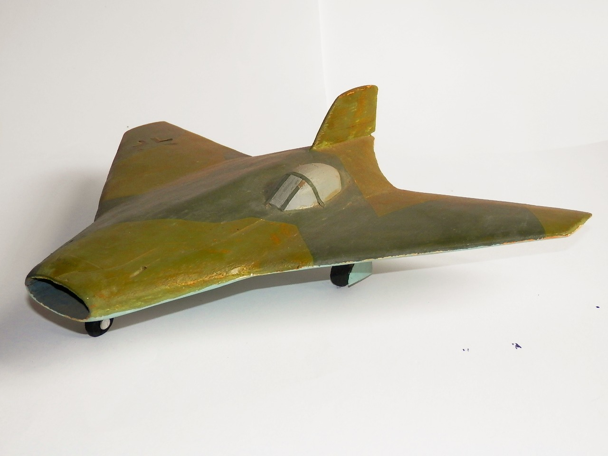
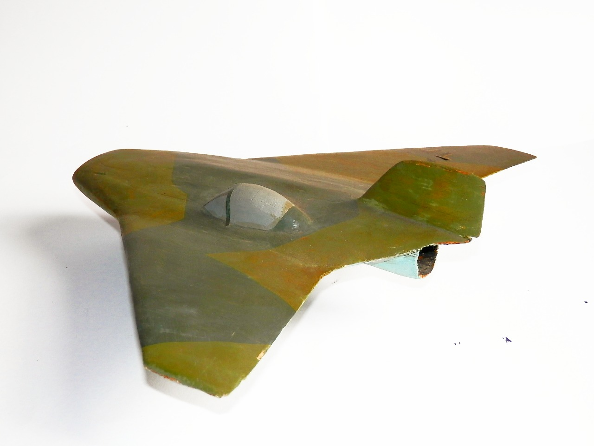

Aerei · scale model archive
Blohm und Voss Ae607
Blohm und Voss Ae607 — Kit: scratch built, Scale: 1/32. Sorry but I wanted to see how this (rather controversial and possibly fictitious)design would…

Photo gallery

English description
Sorry but I wanted to see how this (rather controversial and possibly fictitious)design would look like in 1/32 scale, I should also provide a vac-form canopy to round it up.
Descrizione italiana
Mi spiace, ma volevo vedere che aspetto avrebbe avuto questo progetto, piuttosto controverso e forse immaginario, in scala 1/32. Dovrei anche preparare un tettuccio termoformato per completarlo.